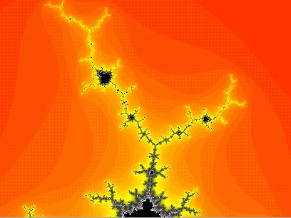

It is crucial that we follow the guidelines in the Style Manual
We indent this sentence.
A list in LaTeX is formed with the following code:
\begin{itemize}
\item The sky is blue.
\item The grass is green.
\end{itemize}
Here is a dot near the top of the Mandelbrot set:
Here are brief notes on the Cayley-Dickson construction and the Octonions: Octonions.pdf
Here is a set of slides at my web site: Slides: Dirac's Belt Trick, Quaternions, and the iPad
This is a link to another html page in the same directory as this HTML Commands page: History of TeXShop
This is a link to the MacTeX web pages: MacTeX
The code below plays a movie explaining how to get started with TeXShop. To save space, that movie is not in the TeXShop distribution. But you can easily obtain a copy. In the TeXShop Help Menu, select "TeXShop Demos" and select "Getting Started". This will download and play the movie. Then go to ~/Library/TeXShop/Movies/TeXShop, where you will find "Getting Started.mp4". Move or copy this file to ~/Library/TeXShop/HTML After that, you will see the movie below, rather than an empty movie image.
Richard Koch
Department of Mathematics
University of Oregon
Eugene, Oregon 97403